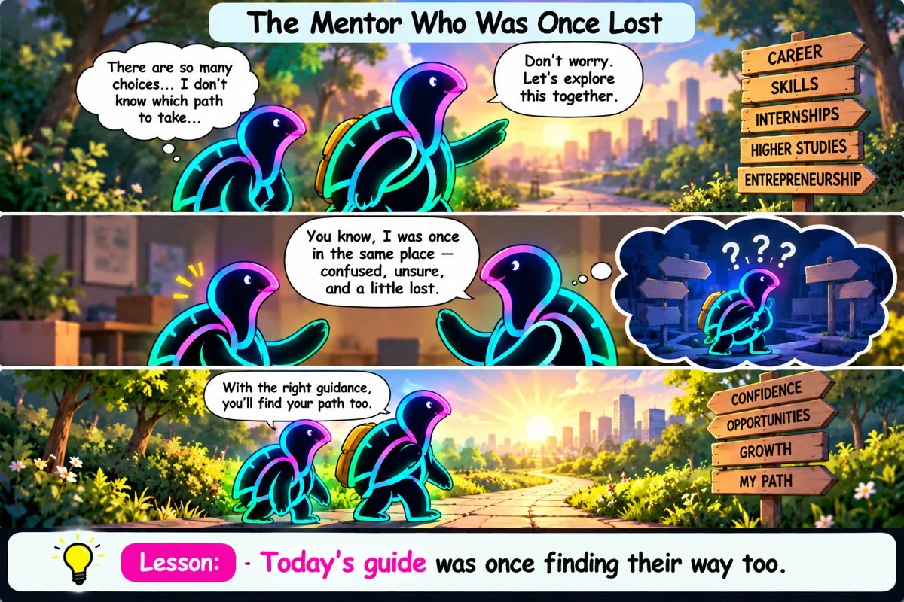

About Us
SocioTurtle is building a more outcome-driven bridge between learning and opportunity for women students — connecting them with educators and employers through visible skills, stronger validation, and meaningful community.
Built on 19+ years of transformation leadership across industries and systems.
Our Beginning
SocioTurtle began with a simple conviction: talent deserves access to opportunity.
After 19+ years leading enterprise transformation across telecom, banking, automobile, oil and gas, chemicals, manufacturing, and media, Poonam Pal saw the same pattern again and again: capability existed, but access to opportunity did not.
SocioTurtle was born from that insight: make learning more visible, validation more credible, and opportunity more accessible for every learner ready to move forward.
Observed the gap
Strong capability existed, but real visibility and access did not.
Built a response
SocioTurtle connects learning, proof, and opportunity into one continuous path.
Gained institutional backing
Incubated at COEP BHAU Institute since June 2026, strengthening our path from idea to scale.
What Guides Us
“Talent is everywhere, but opportunity is not equally distributed.”
SocioTurtle exists to close that gap for women students by connecting them with educators and employers in one continuous story of learning, validation, and opportunity.
Our Core Values
Curiosity
We believe great learning starts with great questions.
Collaboration
Knowledge becomes powerful when it is shared.
Community
Grow through meaningful conversations.
Wisdom
Growing through shared knowledge
SocioTurtle Stories
Short comic-style stories where Socioturtle encourages curiosity, learning, and wisdom through everyday experiences.
